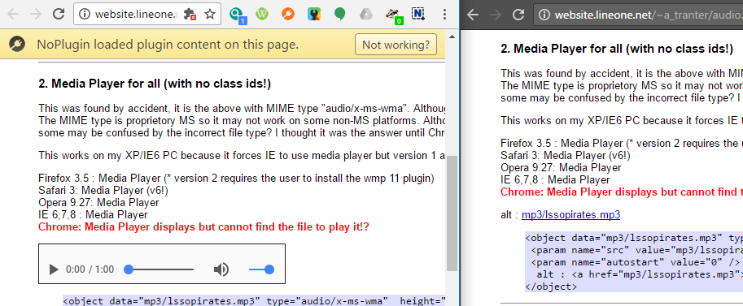

If you’re not familiar with it, NoPlugin (previously named QuickChrome) is a browser extension that allows you to play some plugin content on sites, without the need for plugins. If the content cannot be played in-browser, NoPlugin can download the file to your computer for playback with VLC Media Player (or another video/audio player).
Now I’m excited to release NoPlugin 3.1! This will be going live for Chrome users over the next day or so, and is waiting on approval for people using Opera.
The only major change in this release is how the extension handles plugin objects with audio files. If audio content is detected on the page, it is automatically replaced with an HTML5 player. Previously, the user would be required to click the ‘Show content’ button before the player would become visible. This was changed because the warning would often overlap other elements on the page (due to the small space the original plugin objects take up).

Left: Chrome with NoPlugin, Right: Chrome without NoPlugin
Besides that, NoPlugin 3.1 includes a few bug fixes and updates the internally-used jQuery framework to the latest version.
If you’re wondering when NoPlugin will be available on Firefox, that is a work in progress. Starting with 3.0, the extension is fully compatible with Firefox, but I’m still trying to get it approved with Mozilla. The review process is painfully long (3.0 sat waiting for almost a month before it was approved), so don’t expect it anytime soon.
Download for Chrome
Download for Opera
{kind=link}